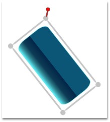

A node can be rotated to any angle by dragging the rotate thumb. A node always rotates on its center.
Properties
|
Property |
Description |
Type of the property |
Value it Accept |
Any other dependencies/ sub properties associated |
|
AllowRotate |
Gets or sets a value indicating whether a node can be rotated or not. The default value is set to true. |
Dependency property |
Boolean (true/ false) |
No |
Rotate Node
The steps to rotate a node are:
1. Select the node to be rotated. The rotate thumb will be displayed in the top left corner.
2. Click the rotate thumb and drag it clockwise or counterclockwise. The node will rotate correspondingly.

Figure 32: Node Rotation
The AllowRotate property can be used to enable/disable
rotation of the node.
When this property is set to true, node
rotation is enabled. Otherwise the rotation is disabled. The default value is
true.
The AllowRotate property can be set in the following way:
|
[C#] nodeobject.AllowRotate = false; |
|
[VB] nodeobject.AllowRotate = False |
Rotate angle property enables the rotation of the selected object with a specified angle. It enables the support to rotate all the selected Nodes.
|
Property |
Description |
Type of the property |
Value it accepts |
Any other dependencies/ sub properties associated |
|
RotateAngle
|
Gets or sets the angle for the Rotation. |
Dependency property |
Double |
No |
After Rotating the Node:

Figure 33: RotateAngle with 60 degree
After Rotating the Group

Figure 34: RotateAngle with 180 degree